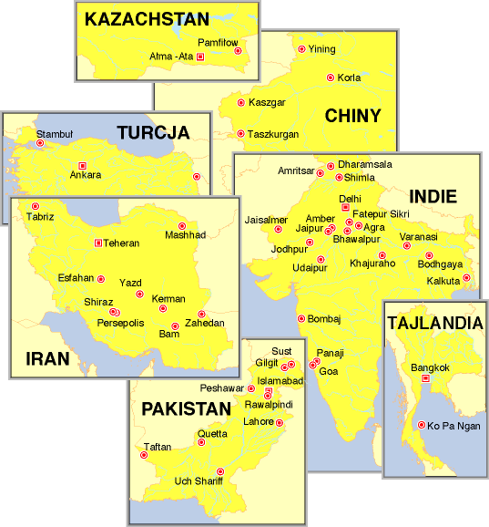

|
Kilka lat temu wsiad³em z Jackiem do poci±gu do Moskwy, stamt±d polecieli¶my do A³ma Aty i potem przez Kazachstan, pó³nocno-zachodnie Chiny i Pakistan pojechali¶my do Indii. Dwa lata pó¼niej ruszy³em w tamte strony ponownie. Tym razem z 'Prabhatem' przedarli¶my siê przez Europê Wschodni± do Stambu³u, a stamt±d do Iranu, Pakistanu i Indii, by na koniec wyl±dowaæ w Bangkoku. Podczas obu tych podró¿y zrobi³em ponad pó³tora tysi±ca slajdów, z których niewielka czê¶æ - niekoniecznie tych najlepszych - jest zaprezentowana na tych stronach.


|